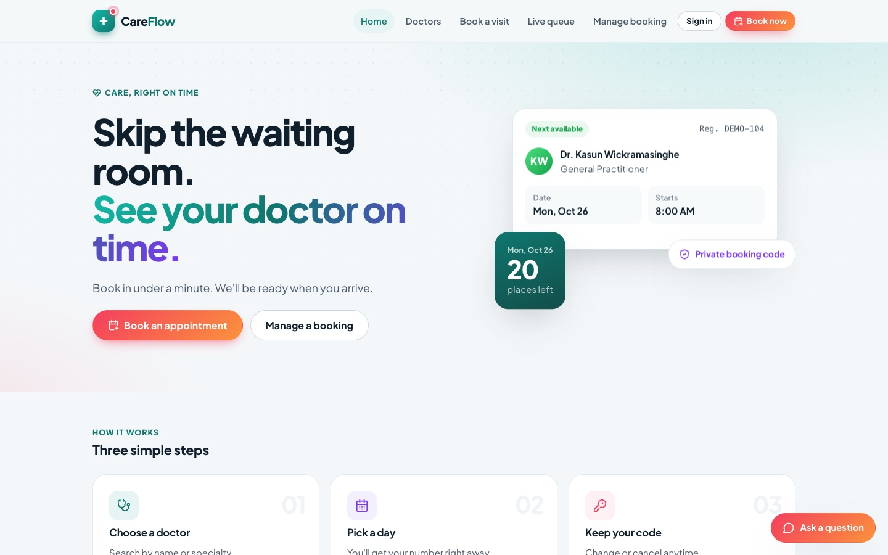

Online booking and live queues for medical clinics
CareFlow lets patients book a doctor online without creating an account and follow the queue from home. Reception and doctors manage the day from one staff portal.

The problem
At many small clinics, booking still means a phone call and a paper register, and patients wait for hours without knowing when their turn will come.
- Booking is slow. Patients have to call during reception hours to get a number.
- No idea when to arrive. Without seeing the queue, everyone comes early and the waiting room fills up.
- Reception juggles everything. Bookings, walk-ins, check-ins and doctor schedules are kept in different places.
- Changes are hard to announce. When a doctor can't come, someone has to phone every patient.
What CareFlow does
- Patients book online in three steps and get a numbered place in a doctor's session.
- A live queue page shows which number is being seen, so patients can arrive on time.
- Reception scans a QR code to check patients in and adds walk-ins quickly.
- Patients receive text confirmations and reminders.
- A chat assistant answers common questions about doctors, hours and booking.
Who uses it
Patients use the public website. Doctors and administrators sign in to the staff portal, and each sees only what they need.
Patients
Book and track a visit
- Find a doctor by name, specialty, language or day
- Book with only a name and phone number
- Move or cancel with a private booking code
- Follow the live queue from anywhere
- Optionally create an account to see all bookings
Administrators and reception
Run the clinic day
- Live dashboard of every doctor's queue
- Register patients, book and add walk-ins
- Check patients in by scanning their QR code
- Manage doctors, accounts and schedules
- Cancel a session and see who to contact
Doctors
See their own patients
- Their own queue and today's appointments
- Start and complete each consultation
- Set weekly sessions and time off
- Edit their public profile
- No access to other doctors' patients
Features
Guest booking
Choose a doctor, a day and a session, then enter a name and phone number. No account and no medical questions.
Numbered sessions
Each doctor has weekly sessions with a patient limit. Every booking gets the next free number, and patients are seen in number order.
Places for walk-ins
Each session can keep some places for reception and walk-ins, so online bookings never fill the whole session.
Live queue
A public page shows the number being seen and the numbers still waiting.
QR check-in
Every booking has a QR code. Reception scans it with a camera or barcode scanner, and the patient joins the doctor's queue.
Text messages
A confirmation when a patient books or moves a booking, and a reminder on the day with their number and check-in code.
Chat assistant
Answers questions about doctors, hours, fees and booking. It can't make bookings, never sees patient records and doesn't give medical advice.
Doctor profiles
Specialty, qualifications, languages, fee and weekly sessions, with search and filters on the public website.
Staff dashboard
Today's figures, each doctor's queue, and quick actions for registering, booking, walk-ins and check-in.
Schedules and time off
Weekly sessions for each doctor, plus time off for part of a day or several days.
Session cancellation
If a doctor can't come, staff cancel the session in one step and patients can move their booking to another day.
Visit times
Records when the doctor arrives and leaves, and when each consultation starts and ends.
How it works
A patient's visit from booking to seeing the doctor.
Find a doctor · Patient
Search by name or specialty, or ask the chat assistant.
Book a session · Patient
Choose a day and session and enter a name and phone number. A number is given straight away.
Booking confirmed · System
A private booking code and a QR code are shown, and a text confirmation is sent.
Reminder on the day · System
A text a few hours before the session with the patient's number and check-in code.
Follow the live queue · Patient
See which number is being seen and leave home at the right time.
Check in · Reception
Reception scans the QR code and the patient joins the doctor's queue.
Consultation · Doctor
The doctor starts and completes the visit in the portal, and the queue moves on.
How numbers work
Each session has a patient limit. Some places can be kept for reception and walk-ins, and online bookings fill the rest.
A cancelled number goes to the next booking. Walk-ins get the next free number in the earliest open session of the day.
Screens
Screenshots from the application with demo data. The doctors and clinic details shown are fictional. Select an image to enlarge it.
Architecture
A React web application talks to a Python API. The API stores data in PostgreSQL, uses a local AI model for the chat assistant, and runs a background job for text messages.
Built with: React, TypeScript, Vite and TanStack Query on the frontend; Python, FastAPI and SQLAlchemy on the backend; PostgreSQL for data; Ollama for the chat assistant.
Data
The system stores only what is needed to book and run the queue. There are no fields for diagnoses, prescriptions or consultation notes.
| Record | What it holds |
|---|---|
| User | A login for an administrator, doctor or patient. Passwords are stored only as hashes. |
| Doctor | Public profile: name, specialty, qualifications, languages and fee. |
| Availability | A weekly session: weekday, start and end time, patient limit and places kept for walk-ins. |
| Time off | Periods when a doctor is unavailable. Any overlap closes the session. |
| Patient | Name and phone number, plus optional details added by staff, and a medical record number. |
| Appointment | A booking: doctor, patient, session, number, status and check-in code. |
| Visit | A patient in the queue, with the time of each step. |
| Session arrival | When the doctor arrived for a session and when they left. |
| SMS message | Each text message to a patient, held until it is sent. |
Privacy and security
CareFlow is designed to collect as little personal information as possible.
No clinical records
The system handles bookings and queues only. Medical details are never requested or stored.
Minimal booking details
A guest booking needs only a name and phone number, and is never matched to another patient's record.
Private booking codes
The code to manage a booking is shown once. The server keeps only a hash of it.
Numbers, not names
The public live queue shows numbers only. A check-in code can't be used without a staff login.
Role-based access
Doctors see only their own patients. Only administrators manage accounts and doctors.
Secure sign-in
Passwords are hashed with Argon2, sessions expire, and a password change signs out every device.
Request limits
Sign-in, booking and the chat assistant limit how often each address can use them.
Chat assistant without patient data
The assistant sees only public clinic information and schedules. Conversations aren't stored on the server.
Timeline
Project milestones in 2026.
Project started
Requirements and the first database design.
Backend foundations
API project, configuration and staff sign-in.
Patients and schedules
Patient registration and search, doctor working hours and time off.
Booking, queues and dashboard
Appointments, visits and queues, and the staff dashboard.
Web application and chat assistant
The public website, the staff portal and the chat assistant.
Simpler patient pages
A simpler patient-facing design and a "next available" doctor card.
Sessions, live queue and QR check-in
Numbered sessions, places for walk-ins, doctor profiles, session cancellation, the live queue, visit times, QR check-in and text messages.
Security improvements
Request limits and safer production settings.
Status
CareFlow currently runs locally with demo data. These are the next steps before a clinic can use it online.
Available now
- Public website: booking, doctor search, live queue, booking management and patient accounts
- Staff portal: dashboard, appointments, patients, schedules, check-in and administration
- Chat assistant running on a local AI model
- Text messages recorded in an outbox that administrators can review
Planned
- Online deployment with a server, HTTPS and a domain name
- Database migrations for safe upgrades
- An SMS gateway so text messages reach patients' phones
- Daily backups
- Reports on waiting times, no-shows and session usage